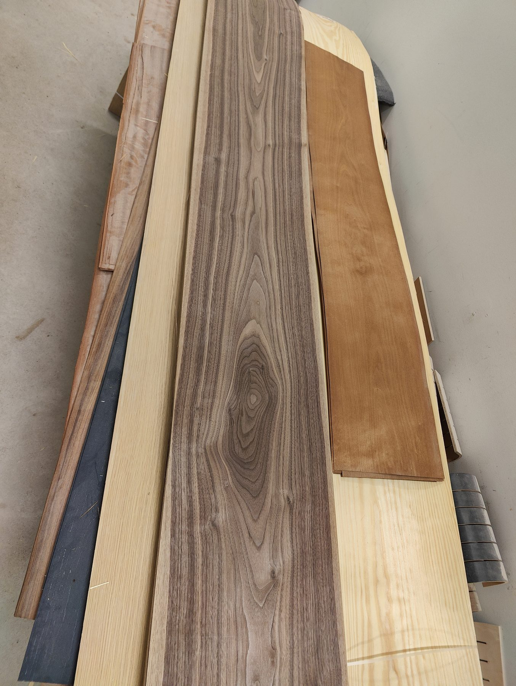

Monipuolinen valikoima puulajeja
Käytämme muotopuristeiden valmistuksessa pääasiassa koivuviilua, joka muodostaa tuotteiden rakenteen. Tuotteen pintaan voidaan valita asiakkaan toiveiden mukaan erilaisia jalopuulajeja, jolloin valmiiseen tuotteeseen saadaan haluttu ilme ja luonnollinen puupinta.
Materiaalivaihtoehdot eivät kuitenkaan rajoitu pelkästään koivuun tai tiettyihin puulajeihin. Valmistuksessa voidaan hyödyntää käytännössä kaikkia puulajeja tuotteen ja käyttötarkoituksen mukaan.